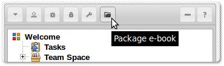
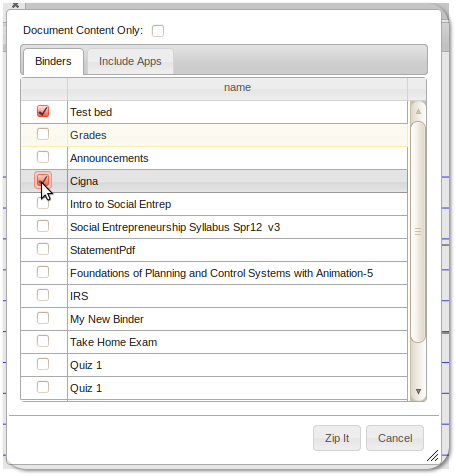
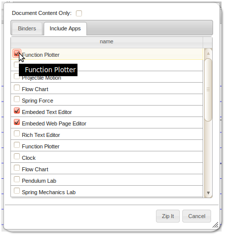
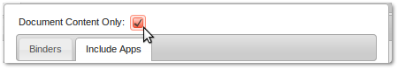

ebooks
Creating and packaging e-books
Binders and Apps can be packaged as interactive e-books for distribution.

e-books can be created either as standalone documents or they can be packaged with the
e-book host Application (the e-book viewer if you will).
To create an e-book packaged along with the e-book host Application:
-
Select the binders you wish to export.
 -
If the binders use Apps then those Apps would need to be packaged also.
 - Select "Zip It" to create the package.
-
Select "Document Content Only".
 -
Select the binders you wish to export.
-
If the binders use Apps then those Apps would need to be packaged also.
- Select "Zip It" to create the package.
Using e-books
If e-book is packaged as a zip file along with the host Application.
- unzip the downloaded file.
-
Open the following file in your browser
appynotebook/p/nd/index.html. Note that you'll need to put the unzipped folder on a webserver for things to work properly. Essentially you need to service it as a static website. - You should see the packaged binders in the navigation panel.
- unzip the downloaded file.
-
Open the following file in a text editor
appynotebook/p/nd/ebooks/appynote-library.js. This file is a list (JSON array) of installed binder packs. You need to add the name of the pack file in the downloaded zip to this list. - To add the binder pack to your library, if there are quoted strings between the brackets, add a comma after the last quoted string in the text editor then add the name of the new pack file in quotes.
-
now copy the pack file to the follow folder
appynotebook/p/nd/ebooks - Refresh your browser, You should see the binders in the newly added pack in the navigation panel.
-
If the zip file contains Apps in the apps folder:
-
Open the following file in a text editor
appynotebook/p/nd/apps/installed-packages.js. This file is a list (JSON array) of installed Apps. You need to add the name of the App manifest file in the downloaded zip to this list. - To add the new Apps to your installation, if there are quoted strings between the brackets, add a comma after the last quoted string in the text editor then add the name of the new manifest file in quotes.
-
now copy the manifest file and all the App folders to the follow folder
appynotebook/p/nd/apps - If the added Apps are for direct use then refresh your browser to see them listed in the App panel.
-
Open the following file in a text editor